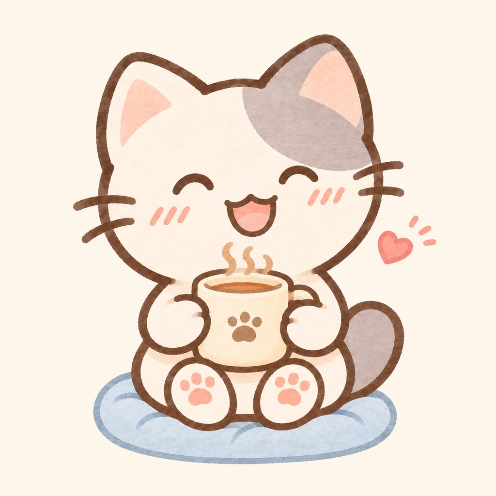
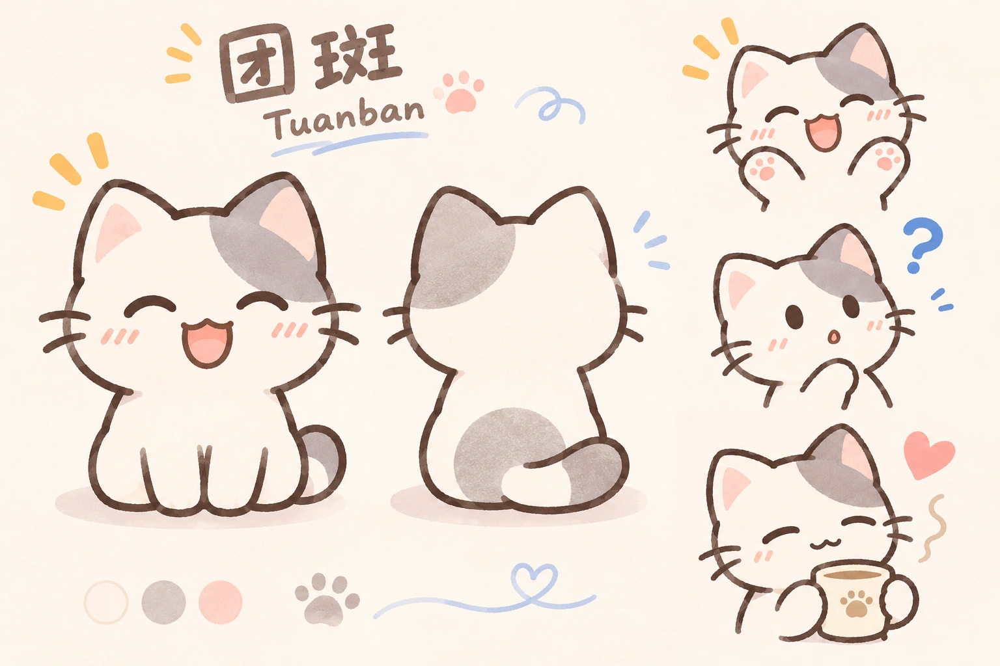

在日常里遇见她
点击贴图可以看大图、了解情绪和使用场景，也能直接保存 WebP。个人项目、二创和插件演示都欢迎。

01 / MEET TUANBAN
每一块灰斑，每一个小动作，
都是认识她的线索。
生日是故事里的设定，不对应真实动物。
02 / HER LITTLE WORLD
03 / SHAPES & COLOURS

A PALETTE THAT FEELS LIKE HOME
色值是创作指导色，不是逐像素取样的严格标准。
04 / THE STICKER COLLECTION
一个小表情，替你说一点心里话。
正式系列 · 1024 × 1024 · WebP
试试别的分类或关键词，先挑一个刚刚好的表情。
05 / MADE TO BE SHARED
点击贴图可以看大图、了解情绪和使用场景，也能直接保存 WebP。个人项目、二创和插件演示都欢迎。
角色资料、贴图库索引和校验脚本一同开放。修改与再分发请遵循 MPL 的通知及源码条件；欢迎保留署名和仓库链接。
双击 index.html 就能浏览，不需要安装依赖。也可用 Python 启动静态服务器。页面不请求外部字体、接口或统计服务。
团斑 / Tuanban 暂未声明注册商标；MPL-2.0 不授予商标权。图片采用 AI 辅助生成，相关创作与许可说明随素材保留。
阅读素材说明 ↗